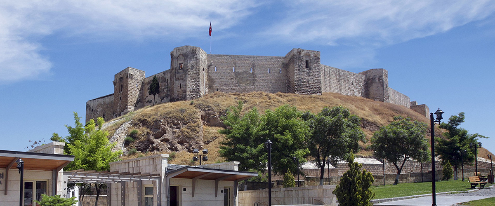

Sadece Gaziantep'in değil, Türkiye'nin de en önemli tarihi yapılarından biri olan ve şehrin simgesi haline gelen Gaziantep Kalesi, bölgeye hakim yüksek bir tepede inşa edilmiş büyüleyici bir yapı. Ülkemizin günümüze kadar tamamen sağlam kalmayı başarmış ender kalelerinden biri olan ve yaklaşık 6000 yıl önce Roma döneminde gözetleme kulesi olarak inşa edilen Gaziantep Kalesi, büyüleyici kaleler yapması ile ünlü Bizans İmparatoru Justinianus döneminde günümüzdeki halini aldı. Osmanlı kaynaklarında 36 kulesi olduğundan bahsedilen kalenin günümüzde 12 tane kulesi bulunuyor ve bu kuleler sundukları büyüleyici Gaziantep manzarasından dolayı günün her saati turistlerle dolu. Memlükler, Dulkadiroğulları ve Osmanlılar tarafından da zaman içinde küçük değişiklikler yapılan Gaziantep Kalesi, 1989 yılında aslına uygun olarak restore edildi. Şehri gezen yerli ve yabancı turistlerin mutlaka ziyaret ettiği, iç bölümlerini de keyifle gezebileceğiniz Gaziantep Kalesi'nin sularından ise özellikle geceleri Gaziantep’in en etkileyici manzaralarının fotoğraflarını çekebilirsiniz.
Türkiye'nin ve dünyaca ünlü müzelerinden biri de Gaziantep'te yer alıyor. Dünyanın ikinci büyük mozaik müzesi olan ve 2011 yılında ziyarete açılan Zeugma Mozaik Müzesi, her yıl tüm dünyadan yüz binlerce tarih, kültür ve arkeoloji meraklısını kendine çeken zengin koleksiyonlara sahip. Geç Antik, Süryani ve Hristiyan dönemi dini motifleri ile süslü binlerce büyüleyici mozaik eseri yakından görebileceğiniz müzede özellikle Zeugma Antik Kenti’nden çıkarılan ve 2500 m2 gibi devasa bir alanı kapsayan Roma dönemi mozaikleri, heykelleri, sütunları ve çeşmeleri çok ilgi çekiyor. 140 m2 duvar resimleri, tunçtan yapılan Mars heykeli, savaş tanrısı Ares'in bronz heykeli ve gördüğümüzde hemen hatırlayacağınız Zeugma’nın Mona Lisa’sı olarak bilinen çingene kızı mozaiği ise müzenin kesinlikle yakından görmeniz gereken eserleri arasında. Gaziantep merkezinde Mithatpaşa Mahallesi, Hacı Sani Konukoğlu Bulvarı üzerinde yer alan Zeugma Mozaik Müzesi'ni hafta içi her gün yaz döneminde 08:30 ile 19:00, kış döneminde ise 08:30 ile 18:30 saatleri arasında ziyaret edebilirsiniz.